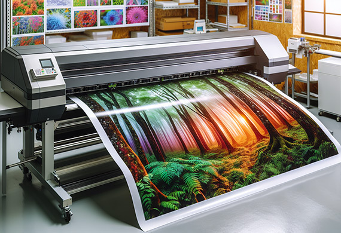
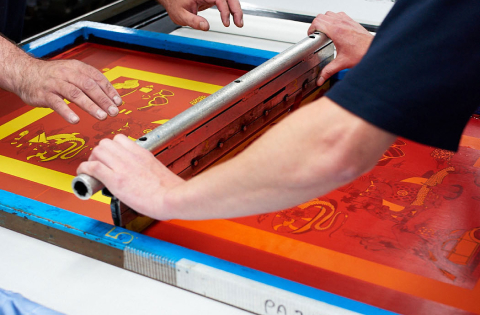
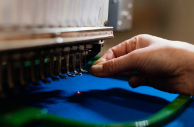
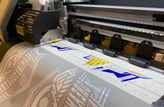
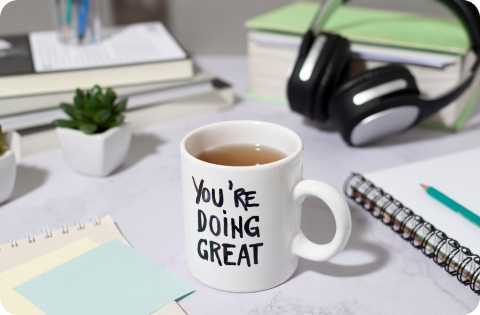

Naše usluge
Širok spektar uslužne štampe prilagođen vašim potrebama, od digitalne do tradicionalne tehnike.

Štampa velikog formata
Naša solventna štampa velikog formata pruža vrhunski kvalitet za različite površine i proizvode, idealna za kreiranje fototapeta, kanvasa, nalepnica, i personalizovanih poklona. Ova tehnika omogućava visoku otpornost na spoljašnje uticaje, što je čini savršenom za spoljne reklame, izloge, kao i unutrašnje dekoracije.

Sito štampa
Idealno za veće narudžbine, ova tehnika obezbeđuje dosledne i živopisne dizajnove na različitim površinama. Naša pažljiva obrada garantuje dugotrajnost i kvalitet.

Mašinski vez
Koristeći vrhunske mašine, studiozno vezujemo vaše dizajnove na odevne predmete, pružajući sofisticiran i vremenski neograničen uticaj.

DTF štampa
Revolucionarna DTF štampa obezbeđuje savršenu boju i trajnost, omogućavajući besprekorno ugrađivanje vaših dizajnova na tkaninu i pružajući dugotrajni završetak.

Sublimacija
Tehnika direktnog prenosa boje na materijal poput tekstila ili keramike, gde boje prelaze iz čvrstog u gasovito stanje stvarajući trajne i živopisne otiske visoke rezolucije.